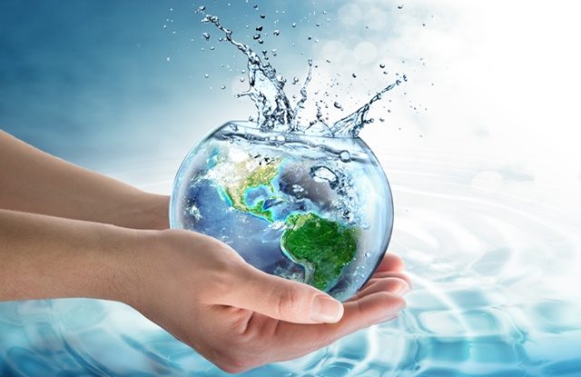

2. Bacias Hidrográficas do Brasil
O Brasil possui várias bacias hidrográficas, como a Amazônica, Tocantins-Araguaia, São Francisco, Paraná, entre outras.

A água é essencial para a vida, sendo fundamental para consumo humano, agricultura, indústria e geração de energia.
O Brasil possui várias bacias hidrográficas, como a Amazônica, Tocantins-Araguaia, São Francisco, Paraná, entre outras.
Os rios voadores são massas de ar úmido que transportam vapor d'água da Amazônia para outras regiões, influenciando o clima e a economia.
O Brasil usa seus recursos hídricos para abastecimento, irrigação, geração de energia e navegação.
Embora rico em água, o Brasil enfrenta desafios como poluição, desperdício e seca em algumas regiões.
Metais pesados, como chumbo e cádmio, podem contaminar a água e causar sérios problemas de saúde.
A poluição do Rio Barigui por metais pesados ameaça a qualidade da água e exige ações para reduzir o impacto ambiental.